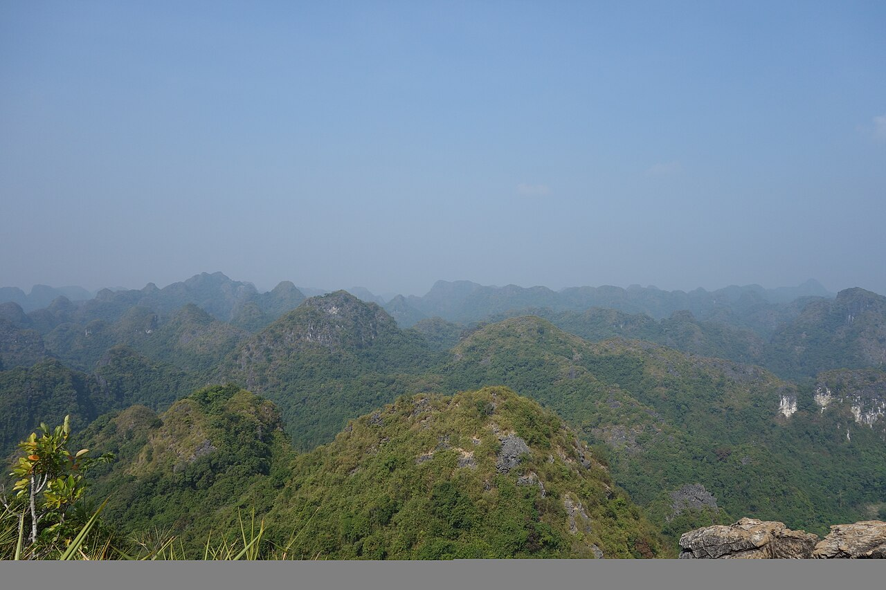

📍 Làng Cổ Việt Hải · Vịnh Lan Hạ🌐 Xu Hướng Du Lịch Xanh & Bền Vững📅 2026-10-25⏱ 5 phút đọc👁 1.090 lượt xem
Xu Hướng Du Lịch Chữa Lành Tại Làng Cổ Việt Hải: Đạp Xe Xuyên Rừng Nguyên Sinh Giữa Lòng Vịnh Lan Hạ
Nằm tách biệt hoàn toàn giữa vùng lõi Khu dự trữ sinh quyển thế giới Cát Bà và bốn bề là núi đá vôi Vịnh Lan Hạ, Làng cổ Việt Hải đang trở thành điểm đến "chữa lành" được du khách Âu – Á yêu thích nhất.

1. Trải nghiệm cung đường đạp xe 5km đẹp nhất đảo Cát Bà
Ngay khi du thuyền cập bến Việt Hải trên Vịnh Lan Hạ, du khách sẽ được nhận xe đạp thể thao (hoặc ngồi xe điện thoáng mát) để lướt dọc con đường uốn lượn một bên là vách núi đá vôi, một bên là mặt vịnh xanh thẫm. Điểm thú vị nhất là khoảnh khắc đạp xe xuyên qua đường hầm núi đá mát lạnh để bước vào thung lũng bình yên của ngôi làng hơn 100 năm tuổi.
2. Ngâm chân suối cá tự nhiên & Thưởng thức ẩm thực bản địa
Dừng chân bên dòng suối nhỏ chảy từ rừng nguyên sinh Vườn Quốc gia Cát Bà, bạn có thể thả chân xuống làn nước mát lạnh để hàng trăm chú cá nhỏ massage tự nhiên, xóa tan mọi mệt mỏi. Người dân làng Việt Hải vô cùng hiếu khách và giữ gìn lối sống xanh không khói bụi.
Bài viết này có mang lại kinh nghiệm hữu ích cho chuyến đi của bạn không?
Hãy thả tim ❤️ để giúp những du khách tiếp theo dễ dàng tìm thấy bài viết hữu ích này nhé!
Đặt trực tiếp không qua trung gian — Đã bao gồm các bữa ăn hải sản cao cấp, vé thắng cảnh, thuyền kayak & bể sục Jacuzzi 4 mùa. Hỗ trợ 24/7 qua Hotline 1900 9070 & Zalo 0961 004 709.
Đường vào Làng cổ Việt Hải đẹp và thuận tiện nhất là đi bằng đường thủy qua Vịnh Lan Hạ (đã nằm sẵn trong lịch trình Du thuyền ngủ đêm 2N1Đ và Tour 1 ngày VIP 1 / VIP 4 của Daiichi Cruise).
#Làng cổ Việt Hải#Vườn quốc gia Cát Bà#đạp xe Việt Hải#du lịch sinh thái Cát Bà#tour vịnh Lan Hạ 1 ngày